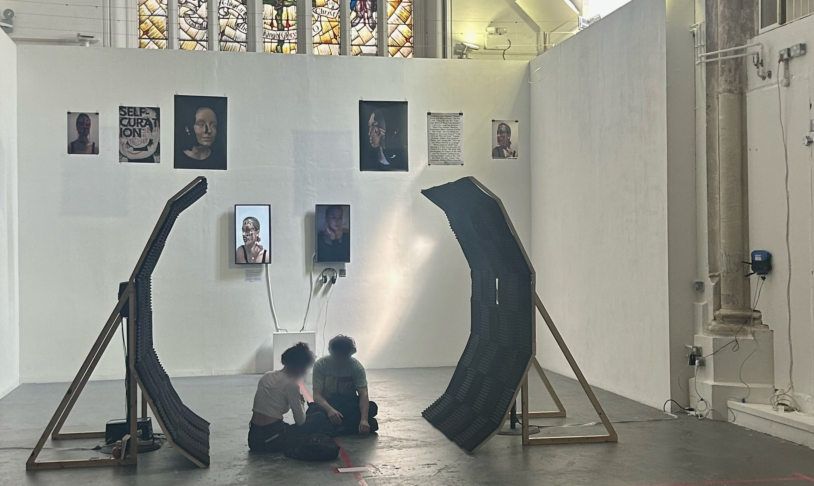

As someone who has experienced a difficult past, I turned to art initially as a means of therapy and self-expression. However, as I continue to grow and evolve, I question my motives and the role that creating art plays in my life. Is it merely a way to revisit and reconcile my past, or does it hold an alternative significance for my future? This piece is an exploration of that internal conflict.
Using Pure Data and two speakers accompanied by acoustic structures, I create an immersive sound experience that gives the illusion of echoing. In this piece, the echoes serve as a metaphor for my past and internal chaos. They continue to reverberate in the present, becoming increasingly distant as time passes. I question how this distance will shape and influence my future decisions.
The sound in this piece embodies a sense of ambiguity and uncertainty, much like my own personal journey. It also represents a willingness to embrace the unknown, the possibility of change, and forgiveness as I seek to transcend the limits of my personal experience.